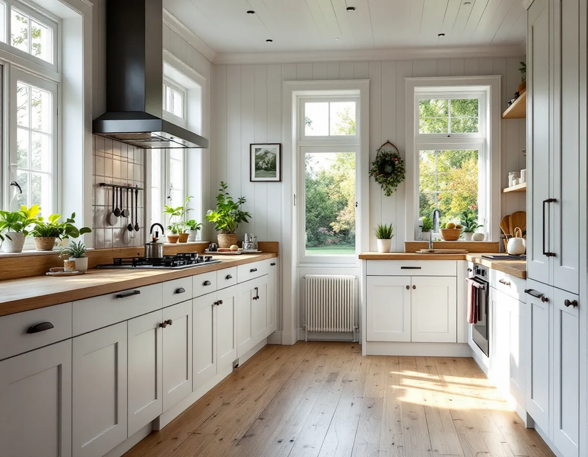
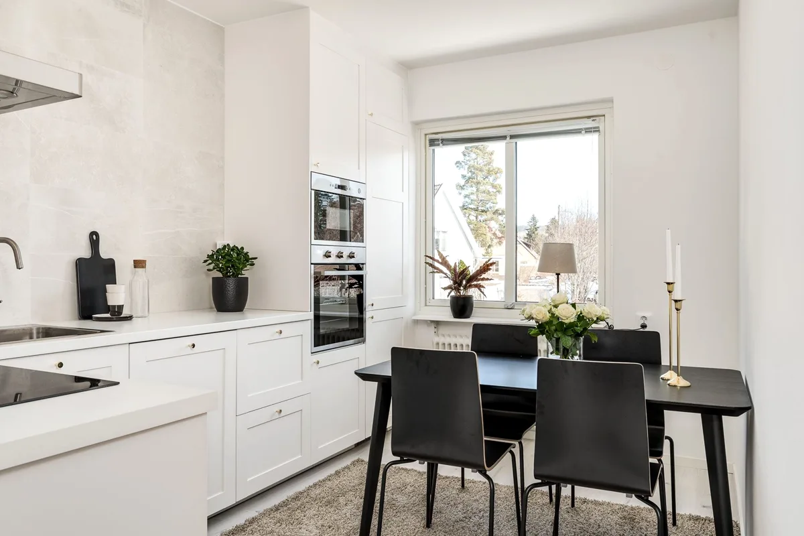

Besök och ritningar
Vi tittar på köket, kanalerna och väggarna och tar fram husets ritningar om de finns.
En köksrenovering i Bromma styrs ofta av sådant som inte syns: en imkanal i en gammal skorsten, en bärande mellanvägg i en trävilla eller ett kök som är litet för att huset är en småstuga. Vi går igenom huset först, ritar köket efter det och samordnar snickeri, el och VVS. Platsbesöket är gratis och ROT-avdraget dras direkt på fakturan.

Brommas villabebyggelse kom i omgångar. Staden köpte Äppelviken och Alvik 1908, och där byggdes stora villor från 1910-talet. På 1920-talet följde trädgårdsstäderna i bland annat Ålsten, Smedslätten och Nockeby med hus i ett och ett halvt plan under branta sadeltak. Ett kök i ett hundraårigt hus har sällan bara en historia, och det är först när skåpen är nere som det syns hur det har byggts om.
Småstugorna är mindre. I Olovslund byggdes de flesta husen 1927–28 av familjerna själva, och i Norra Ängby restes 1 200 småstugor 1931–38 av fabrikstillverkade element. När ett kök i ett så litet hus ska bli större handlar det nästan alltid om att låna yta från ett angränsande rum eller om en tillbyggnad – och då kommer frågan om väggen mellan rummen bär.
Funkisvillorna i Södra Ängby, drygt 500 hus från 1934–39, är ritade med genomtänkta planer där köket har en bestämd plats. Där brukar det löna sig att behålla läget och lägga arbetet på stomme, bänkskiva, belysning och ventilation i stället för att flytta runt funktionerna.

Stockholms stad beskriver hur självdrag fungerar i äldre hus: en skorsten går genom huset och mynnar över nocken, och den använda luften sugs ut via skorstenskanalen i kök och badrum. Drivkraften är skillnaden mellan inne- och utetemperatur, så på sommaren kan draget nästan utebli. Frånluft med fläkt blev vanligt i hus byggda 1961–1975, och från 1976 är system med både från- och tilluft vanligare.
För köket betyder det att spisen helst står där en imkanal redan finns. Staden påpekar att ett kök behöver tillräcklig frånluft och att kanalen ska uppfylla kraven för imkanal. Ska samma kanal användas både som imkanal för köket och frånluft för badrummet måste det sammanlagda måttet räcka, och staden rekommenderar att man tidigt rådgör med skorstensfejarmästaren om en ny eller ändrad kanal.
Att byta eller installera en fläkt som påverkar ventilationsflödena räknas som en väsentlig ändring, och då krävs anmälan och startbesked. Det gäller till exempel om en motordriven köksfläkt ska kopplas till en kanal som är byggd för självdrag. Monteras en fläkt eller kanal på utsidan av huset kan det dessutom vara en ändring av yttre utseende som kräver bygglov.
Önskan om ett öppnare kök är vanlig i trädgårdsstädernas hus, där rummen ofta är små och avgränsade. Påverkar ändringen husets bärande konstruktion krävs anmälan och startbesked. Staden tipsar om att man kan logga in med BankID och se husets äldre ritningar i Bygg- och plantjänsten, men varnar också för att ritningar kan vara ofullständiga och att de som byggde inte alltid följde dem.
Därför tar vi med en konstruktör när en vägg ska bort eller göras om. Konstruktionsritningen ska enligt staden upprättas av en sakkunnig konstruktör, och en kontrollplan bestäms i samband med startbeskedet. Beslutet ska komma inom fyra veckor från att anmälan är komplett, med möjlighet för staden att förlänga en gång med ytterligare fyra veckor – räkna med det i tidplanen.
Att bara flytta köket inom huset kräver inte bygglov, och har ändringen ingen påverkan på de tekniska egenskapskraven behövs inte heller någon anmälan. Läs mer om vad som gäller för köket i stort under köksrenovering i Stockholm.
Staden skriver att man vid alla ändringar ska ta hänsyn till byggnadens kulturhistoriska värden. Stadsmuseets klassificering ger en första bild av hur huset bedöms, och i riksintressena för kulturmiljövården – Norra och Södra Ängby, Ålstensgatan och Olovslund – kan lov krävas även för sådant som annars är lovfritt.
Inne i huset brukar det röra sig om detaljer som snickerier, dörrar och fönsterbänkar som är värda att spara när köket byts. Ute är det fläkthuvar, nya fönster och dörrar mot trädgården som kan behöva prövas. Går en ny kanal genom taket samordnar vi genomföringen med taket – se takläggare i Bromma.
Vi tittar på köket, kanalerna och väggarna och tar fram husets ritningar om de finns.
Ska en vägg bort eller en ny imkanal till tar vi in konstruktör och stämmer av med sotaren.
Du får ett skriftligt förslag, och vid behov lämnas anmälan in innan arbetet startar.
Gamla skåp rivs, och el, vatten, avlopp och fläktkanal dras enligt den nya planen.
Väggar och golv görs klara, stommen monteras och bänkskivan mäts in på plats.
Vitvaror och belysning ansluts och provas, och du får handlingarna från arbetet.
Rotavdraget är 30 procent av arbetskostnaden, högst 50 000 kronor per person och år och högst 75 000 kronor tillsammans med rut. I ett småhus räknar Skatteverket bland annat att montera fast köksinredning och installera vitvaror i samband med en omfattande renovering, att byta eller måla köksluckor och att modernisera el och byta uttag som rotarbete. Rengöring av ventilation och imkanaler ger också rotavdrag i småhus.
Skåp, bänkskiva och vitvaror är material och ger inget avdrag. Vi drar avdraget direkt på fakturan och skriver arbete och material var för sig.
Mest avgör om spis och diskbänk kan stå kvar där kanal och avlopp redan finns. En ny imkanal, en vägg som ska bort med balk och konstruktionsberäkning eller en el som behöver moderniseras lägger till arbete. Därefter styr val av stomme, bänkskiva och vitvaror. Efter ett gratis besök får du ett skriftligt kostnadsförslag.
Planering, el, VVS, fläkt och väggar.
Köksrenovering i Stockholm →Takbyte, takbesiktning och plåtarbeten.
Takläggare i Bromma →Trädgårdsstäder, tegel och funkistak.
Takrenovering i Bromma →Småspröjs, småstugor och funkis i Bromma.
Fönsterbyte i Bromma →Kupor, låga tak och bleck i Bromma.
Plåtslagare i Bromma →